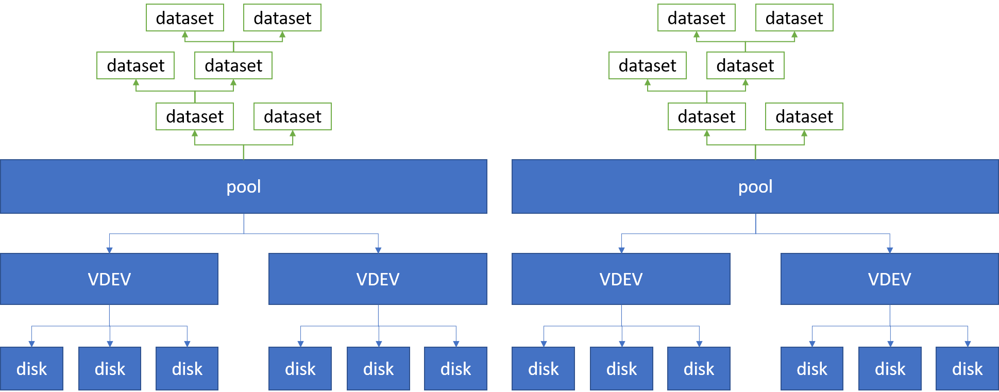

FreeBSD ZFS
Contents
References
- FreeBSD Mastery: ZFS
- Chapter 3: Creating Pools and VDEVs
- Chapter 4: Mounting ZFS Filesystems
- Chapter 5: Replacing Mirror Providers
- Chapter 8: Custom ZFS Installation Partitioning
- FreeBSD Mastery: Storage Essential
- Relevant man pages
- Installing FreeBSD Root on ZFS (Mirror) using GPT (FreeBSD wiki)
Working with storage and file system
See BSD repository README.md for updated version.
- lists all disks recognized by the OS:
geom disk list - working with partitions
- lists all partitions:
gpart <show|list - create partition scheme for disk:
gpart create -s gpt <device> - destroy partition for disk:
gpart destroy [-F] <device> - add new partition to device:
gpart add -t <fs_type> -a 1m <device> - write boot code to disk:
gpart bootcode -b boot/pmbr -p boot/gptzfsboot -i <part#> <device> - devices and partitions are at
/dev/ - GPT labels are at
/dev/gpt
- lists all partitions:
Understanding and Working with ZFS
I've a very successful weekend learning and adopting ZFS on my home server. As an end result, I'm running a ZFS pool on a single mirrow VDEV composed of two disks.
On a high level, an ZFS system looks like below.

There can be multiple ZFS pools present on the system. Each pool consists of multiple VDEVs. Each VDEV consists of multiple disks. Then on top of each pool, a tree structure of "datasets" can be created to organize file systems. Datasets is there mainly for management purposes.
A VDEV is a cluster of disks. VDEV implements software RAID. VDEV manages redundency - if a portion of the disks inside a VDEV fail, that might be OK. But if a VDEV fail inside of a pool, the entire pool is broken. The VDEV can take either an entire, raw disk, or take disk partitions. I opt for disk partitions because this way you can make sure all providers in the VDEV has the same sector size.
There're multiple types of VDEVs:
- stripe (single disks composed together)
- mirror (N:1 mirroring)
- RAIDZ-1, RAIDZ-2, RAIDZ-3 (more advanced types of RAID)
There's a quite general purpose way to prepare (e.g., partitioning) a disk for use in ZFS. The partition looks like:
- a freebsd-boot partitioin, 512k
- a freebsd-swap partition, 2GB
- a freebsd-zfs partiion, the rest of the entire disk
For a disk ada1:
# CREATE GPT PARTITION SCHEME:
gpart create -s gpt ada1
gpart add -t freebsd-boot -a 1m -b 40 -s 512k ada1
gpart add -t freebsd-swap -a 1m -s 2G ada1
gpart add -t freebsd-zfs -a 1m ada1
# WRITES BOOT CODE TO MBR AND TO BOOT PARTITION:
gpart bootcode -b /boot/pmbr -p /boot/gptzfsboot -i 1 ada1
Note:
-
Use
-a 1mto make sure the sector size aligns regardless of disk differences. See fmzfs, section "Pools Alignment and Disk Sector Size". -
-b 40to begin the boot partition at 40B. -
I don't use GPT labels, as opposed to fmzfs. Later pool manipulations all use partition names directly (e.g.,
ada1p3).
Now to add the disk to a mirrow VDEV in zroot pool:
zpool attach zroot ada0p3 ada1p3
Here we attach ada1p3 to poll zroot, and ask it to mirror the existing
provider ada0p3. Now zpool status should show the newly added disk is
"resilvering".
The result of the above command is:
Make sure to wait until resilver is done before rebooting.
If you boot from pool 'zroot', you may need to update
boot code on newly attached disk 'ada1p3'.
Assuming you use GPT partitioning and 'da0' is your new boot disk
you may use the following command:
gpart bootcode -b /boot/pmbr -p /boot/gptzfsboot -i 1 da0
Replacing Disks in ZFS Pool
Today (2021-01-25) one of the mirrored disk is failing so I had to replace it. On high level, it involved:
- remove the old disk
- connect new disk
- format new disk
zpool replace <pool> <old> <new_partition>- write boot code to new disk
- wait for resilvering done
This article describes almost the exact steps I followed.
For formating new disk, one can copy partition from old disk:
1 | gpart backup ada0 > ada0.parts |
If ada1 is larger and the zfs partition is at the end, one can resize (grow)
the zfs partition with below. Note that leaving out -s would set size to all
the rest of the disk space.
1 | gpart resize -i 3 -a 1m ada1 |
I had hard time booting into the zfs pool and had the system detect the new disk. Troubles are
- my failed disk is connected to the 1st boot SATA cable. If I connect it to the new disk, system insisted to boot from it, even though my 2nd (good old) disk is bootable.
- if I unplug 1st SATA then system booted successfully, but hot-plug new device
won't get recognized - didn't show in
geom disk list,dmesgor/var/log/messages;camcontrol rescandidn't help. - what worked is I manually swapped the SATA cables so my good old disk is now
the 1st SATA disk, and the new disk is the 2nd. This way, the system boots,
and the new disk is recognized in
geom.
Writing boot code is as usual:
1 | gpart bootcode -b /boot/pmbr -p /boot/gptzfsboot -i 1 ada1 |
IMPORTANT NOTE ON ZPOOL REPLACE
NOTE when issue:
1 | # zpool replace <pool> <old_id> <new_partition> |
That is the new partition (e.g. ada1p3), NOT new disk. If you put disk
(ada1) it will still work (use the whole disk as raw for mirrowing) but you
lost the partition schemes on the disk, so you won't be able to boot from it,
in case your other disk in the mirrow fail.
CREATING ZVOL, UFS PARTITION ON ZFS
Main doc. zvol is like zfs dataset, but exposed as raw block device. So it is useful, e.g, for creating filesystems on top.
1 | zfs create -V 2g -o compression=on zroot/ufs_part |